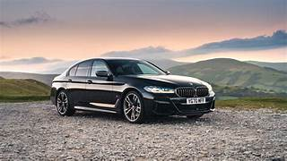
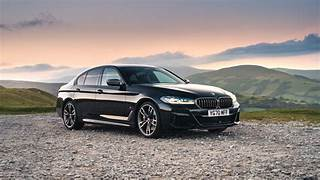

This article is about the German motor vehicle manufacturer. For other uses, see BMW (disambiguation).
Bayerische Motoren Werke AG, abbreviated as BMW (German pronunciation: [ˌbeːʔɛmˈveː] (listen)), is a German multinational manufacturer of luxury vehicles and motorcycles headquartered in Munich, Bavaria, Germany. The company was founded in 1916 as a manufacturer of aircraft engines, which it produced from 1917 to 1918 and again from 1933 to 1945.
Automobiles are marketed under the brands BMW, Mini and Rolls-Royce, and motorcycles are marketed under the brand BMW Motorrad. In 2017, BMW was the world's fourteenth-largest producer of motor vehicles, with 2,279,503 vehicles produced.[3] The company has significant motor-sport history, especially in touring cars, sports cars, and the Isle of Man TT.
BMW is an abbreviation for Bayerische Motoren Werke (German pronunciation: [ˈbaɪ̯ʁɪʃə mɔˈtʰɔʁn̩ ˈvɛɐ̯kə]). This name is grammatically incorrect (in German, compound words must not contain spaces), which is why the name's grammatically correct form Bayerische Motorenwerke (German pronunciation: [ˈbaɪ̯ʁɪʃə mɔˈtʰɔʁn̩vɛɐ̯kə] (listen)) has been used in several publications and advertisements in the past.[16][17] Bayerische Motorenwerke translates into English as Bavarian Motor Works.[18] The suffix AG, short for Aktiengesellschaft, signifies an incorporated entity which is owned by shareholders, thus akin to "Inc." (US) or PLC, "Public Limited Company" (UK).
The terms Beemer, Bimmer and Bee-em are sometimes used as slang for BMW in the English languageand are sometimes used interchangeably for cars and motorcycles.
Eadie had won contracts to supply precision parts for firearms to the government's long-established Royal Small Arms Factory at Enfield, Middlesex, with its offshoot in Sparkbrook and had assumed the brand name Royal Enfield.[10] In 1896 they also incorporated a new subsidiary company, The New Enfield Cycle Company Limited,[note 1] to handle much of the cycle work and in 1897 Enfield making complete cycles as well parts for other assemblers took all the cycle assembly work from Eadie.


 
